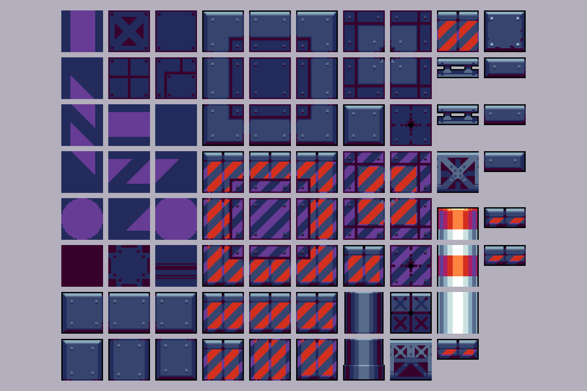
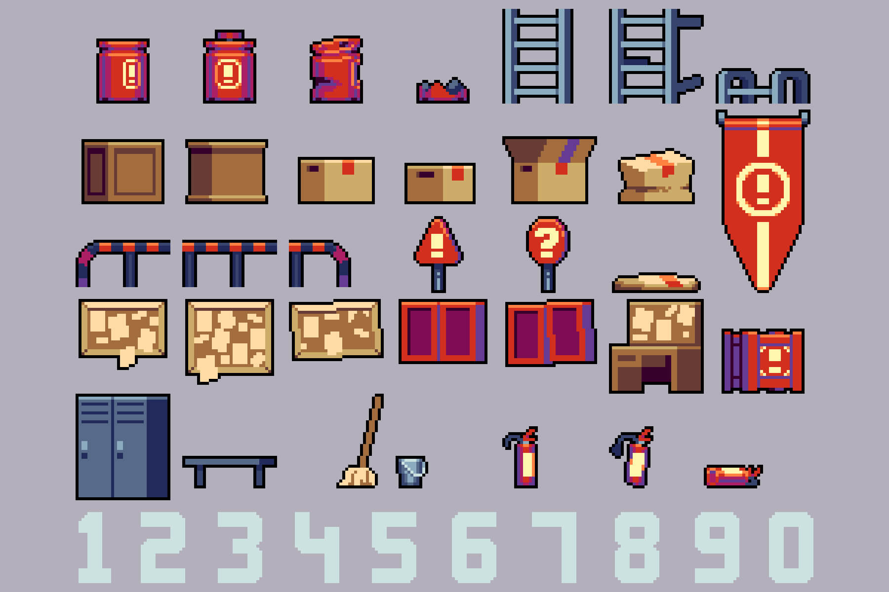
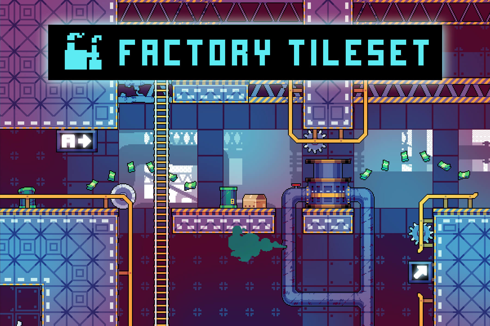
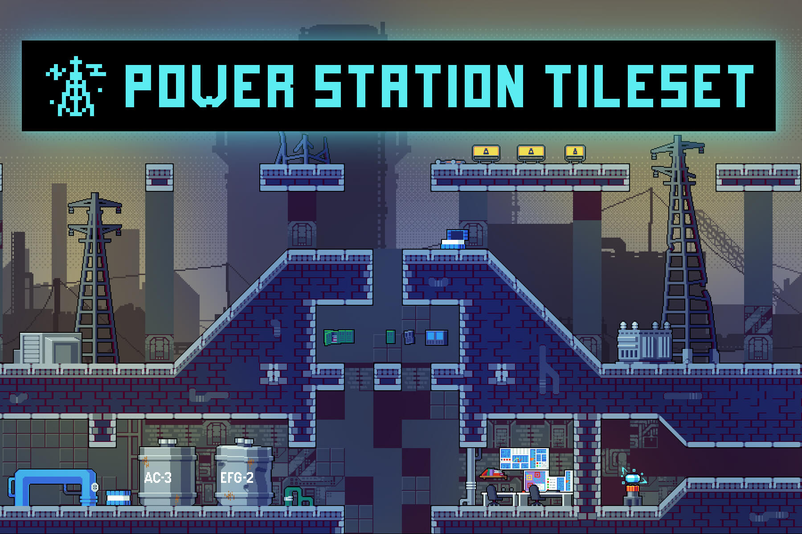

🎨 地图画风参考预览
从 CraftPix 免费素材里挑的 5 张预览图，先看看喜欢哪个方向（纯参考，确认后再决定用 CC0 素材 / CSS 手绘 / 生成）
💡 怎么看：手机或电脑浏览器打开
http://IP:3000/tileset_preview.html，点开大图看细节。
每张都是 1800×1200 的预览图。这些是 CraftPix 免费素材（Freebies，可商用免版税），
不是最终素材，只是让你定 风格方向。
🏭 工业区 Tileset 免费 · 可商用
经典像素工厂：厂房、仓库、烟囱、管道。整体偏 暗色工业风，最贴近"锐智工厂"的设定。

工业区 · 全貌（厂房 + 烟囱）
craftpix.net/freebies/free-industrial-zone-tileset-pixel-art

工业区 · 建筑细节
同上

工业区 · 环境件
同上
🤖 赛博工厂 Tileset 免费 · 可商用
32×32 像素，未来工业科幻风：锈蚀钢架、机械、管道、通风井、霓虹。适合把地图做得更"酷"、更游戏化。

赛博工厂 · 全貌
craftpix.net/freebies/free-factory-pixel-art-32x32-tileset-for-cyberpunk
⚡ 电厂 Tileset 免费 · 可商用
SCI-FI 电厂：冷却塔、发电机组、控制面板、线缆、灯光，带白天/夜晚双背景。可做"电力/能源"相关场景。

电厂 · 全貌
craftpix.net/freebies/power-station-free-tileset-pixel-art
备注：以上均为 CraftPix Freebies 免费素材（免版税，可商用，免费下载）。
如果你想要其它风格（明快卡通 / 复古 8-bit / 暗黑废墟 / 手绘），我可以再去找 OpenGameArt、Kenney、itch.io 等站的 CC0 素材，或直接用 imagegen 生成原创像素素材。
如果你想要其它风格（明快卡通 / 复古 8-bit / 暗黑废墟 / 手绘），我可以再去找 OpenGameArt、Kenney、itch.io 等站的 CC0 素材，或直接用 imagegen 生成原创像素素材。